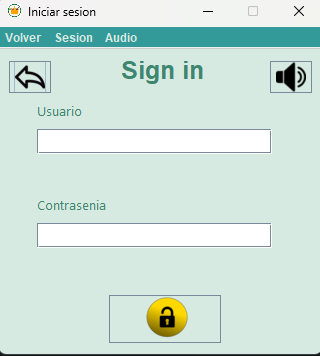
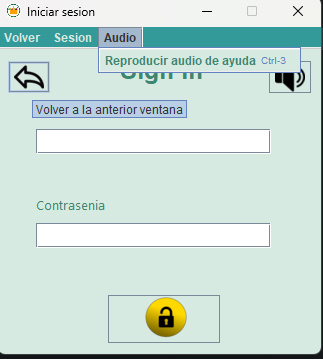
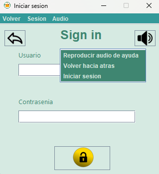

En el caso de que tengamos una cuenta creada o esté recién creada, deberemos dirigirnos a la ventana de Iniciar Sesión, volviendo a la ventana principal y pulsando el botón "Iniciar Sesión". Una vez aquí, deberemos introducir nuestro nombre de usuario y nuestra contraseña que escribimos al crear nuestra cuenta, y pulsar el botón que tiene un candado abierto para poder entrar al vestíbulo donde ya podremos empezar a realizar nuestras compras. También podemos iniciar sesión en la barra de tareas pulsando el botón sesión que nos mostrará un botón desplegado llamado "Iniciar Sesión" que tendrá la misma función. También tiene un botón atrás que si lo pulsamos nos devolverá a la ventana principal. En esta ventana en la parte superior derecha se encuentra un botón el cual reproduce un audio, el cual es una música ambiental para la aplicación, cuyo objetivo es adentrarte en la aplicación y hacerte sentir como si estuvieses en el supermercado original pero dentro de su domicilio o ubicación en la que se encuentre.
En esta interfaz tendremos la posibilidad de ingresar nuestros datos de acceso y poder acceder a nuestra cuenta en la tienda
 Como podemos observar, la aplicación cuenta con amplias opciones de accesibilidad como audionarración, menús contextuales y tooltips, aparte de atajos de teclado